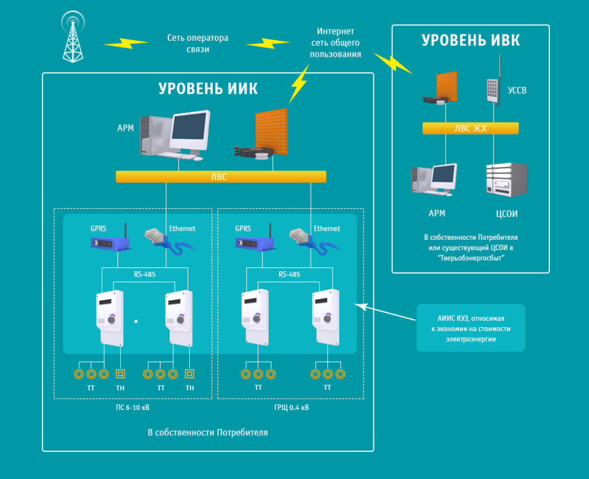

Малая энергетика (генерация) — промышленный сектор в энергетики отвечающий за процессы получения тепла и электричества независимо от централизованных сетей. Основным преимуществом в малой энергетике является характеристики генерирующих установок, а именно: компактные размеры генераторных блоков и, как правило, мобильность конструкций.
Развитие малой энергетики — одна из важнейших задач современной экономики России. С одной стороны, в нашей стране более 60% территорий находятся в зонах децентрализованного энергоснабжения, производство электроэнергии в этих районах целиком зависит от автономных источников питания, которыми в большинстве случаев становятся дизельные электростанции. С другой стороны, развитие малого и среднего бизнеса ставит перед энергетиками задачи по обеспечению новых предприятий надежным и качественным энергоснабжением по более низким тариф по сравнению с тарифами Гарантирующих поставщиков и независимых энергосбытовых компаний.
Цена на электроэнергию для крупных потребителей достигла уровня, который вынуждает покидать энергосистему не только промышленные предприятия, но и организации, для которых строительство собственных мощностей казалось невыгодным. Проекты собственной генерации окупаются в течение 5 лет. Быстрее всего — примерно за 4 года — возвращают деньги энергоемкие предприятия, чьи мощности работают с постоянной высокой загрузкой. Для остальных срок окупаемости растягивается до 7 лет. Еще пару лет назад организации в основном строили генерацию на собственные деньги, сейчас же на рынке достаточно инвесторов и поставщиков готовых предложить комплексные решения по реализации данных проектов.
ООО «Тверская объединенная энергосбытовая компания» предлагает крупным предприятиям и различным учреждениям разные варианты поставки газопоршневых мини-ТЭЦ: продажа, долгосрочная аренда с последующем выкупом, лизинг.
В деятельности любой компании возникает ряд сложных и не однозначных проблем, связанных с эффективной организацией электроснабжения. Вы не понимаете, как оптимизировать расходы на энергоресурсы, организовать коммерческий учет, разрешить спорные моменты с субъектами рынка электроэнергии и мощности?
Специалисты ООО «Тверская объединенная энергосбытовая компания» всегда готовы Вам помочь.
Мы предлагаем знания и опыт наших экспертов для решения финансовых, технических, юридических вопросов, связанных с электроснабжением, в том числе:
Системы коммерческого учета электроэнергии в своей основе состоят из двух типов — первый для использования на оптовом рынке и соответственно второй на розничном рынке электроэнергии.
Для оптового рынка необходимо создание АИИС КУЭ (Автоматизированная информационно-измерительная система коммерческого учета электроэнергии)
На розничном рынке (при расчетах с гарантирующим поставщиком) — АСКУЭ (Автоматизированная система коммерческого учета электроэнергии)
Разница между этими определениями обусловлена механизмами применения и техническими требованиями, которые предъявляются к данным системам. Так, АИИС КУЭ для оптового рынка должны соответствовать требованиям Приложения 11.1 к Положению о получении статуса субъекта оптового рынка, в котором утверждены все параметры системы измерения, учета, сбора, передачи и обработки данных. АСКУЭ розничного рынка строится в соответствии с Основными положениями функционирования розничных рынков электроэнергии (ППРФ № 442), в котором регламентируется только почасовой учет и классы точности средств измерения и учета.
Структура АИИС КУЭ, используемая для расчетов на оптовом рынке, представлена на рисунке. Это базовая, наиболее простая система, рассчитанная на работу с малым количеством точек измерения электроэнергии:

ООО «Тверская объединенная энергосбытовая компания» предлагает комплексные услуги по разработке и внедрению автоматизированных систем коммерческого учета, как для розничного рынка, так и для оптового рынка:
Основной целью современного и развивающегося предприятие является нахождение способов быть конкурентоспособным, в условиях существующего рынка. Одним из основных механизмов получения рентабельного производства может служить управляемый процесс по сокращению расходов, связанных с приобретением энергоресурсов.
Эффективным организационным мероприятием по снижению затрат является покупка электроэнергии на оптовом рынке электроэнергии и мощности (ОРЭМ).
Оптовый рынок электрической энергии и мощности (ОРЭМ) — виртуальная площадка обращения электрической энергии и мощности в рамках Единой энергетической системы России в границах единого экономического пространства Российской Федерации с участием крупных производителей и крупных покупателей электрической энергии и мощности, а также иных лиц, получивших статус субъекта оптового рынка.
Субъектами оптового рынка являются организации, получившие право на участие в процессе, связанным с обращением электрической энергии и мощности на оптовом рынке. Каждый субъект оптового рынка регистрирует одна или более групп точек поставки (ГТП), в отношении которых этот участник осуществляет куплю продажу электрической энергии и мощности на ОРЭМ.
Участниками оптового рынка могут стать только крупные покупатели, суммарная присоединенная мощность энергопринимающего оборудования которых больше 20 МВА. Кроме того, ко всем участникам ОРЭМ предъявляются требования по обеспечению коммерческого учета в соответствии с требованиями ОРЭМ.
Выход на оптовый рынок — многоуровневый процесс имеющий ряд сложностей, включающий в себя:
Организационные мероприятия по выводу Потребителя на ОРЭМ, в случае заключенного с нами Договора электроснабжения, мы выполним за свои средства.
Разница сбытовых надбавок. Сбытовая надбавка гарантирующего поставщика устанавливается регулирующими органами, надбавка же независимой энергосбытовой организации может формироваться в договоре с Потребителем по договоренности сторон.
Ликвидация перекрестного субсидирования. В процессе заключения договора электроснабжения независимая энергосбытовая организация проведёт анализ документации, и устранит ошибки в расчетах за электроэнергию, если они имели место. Как правило, в данном случае финансовые потери Потребителя связаны с неправильным определением уровня напряжения, принятого при расчетах, определением фактического объема потребленной мощности и различий в способах оплаты за передачу электроэнергии при присоединении к сетям РСК, ФСК или Генерации.
На бесперебойность и качество электроснабжения ни независимая энергосбытовая компания, ни гарантирующий поставщик не влияют. Данная ответственность зеркально отражается сбытом на сетевую организацию, к которой присоединены энергопринимающие установки потребителя. Соответственно риски Потребителя, переходящего к независимому сбыту минимальны, тем не менее, опасность теоретически существует:
В следствии не качественного предварительного анализа, а так же не точного планирования потребления электроэнергии, сбытовая организация терпит периодические убытки. В данном случае сбыт инициирует расторжение договора энергоснабжения. В этой ситуации Потребитель возвращается к гарантирующему поставщику, формально теряя экономию, получаемую на ОРЭМ. Фактически, очевидно, что такой экономии на ОРЭМ и не было. Недобросовестная сбытовая организация ликвидируется, получив от Потребителя аванс, не заплатив при этом по своим обязательствам на ОРЭМ и поставщикам услуг. В такой ситуации поставщики электроэнергии возмещает издержки в судебном порядке со сбытовой организации (договорных отношений с Потребителем у поставщиков электроэнергии нет), а риски Потребителя возникают только в части оплаты услуг по передаче электроэнергии сетевой организацией, так как последняя имеет право ограничить электроснабжение в случае неплатежей.
В масштабе розничных рынков электрической энергии исполняется сбыт электроэнергии, приобретенной на оптовом рынке электроэнергии и мощности, а также электроэнергии генерирующих компаний, не являющихся участниками оптового рынка. Основной нормативный документ, определяющий порядок работы на розничного рынка электроэнергии и мощности — это «Основные положения функционирования розничных рынков электроэнергии» утверждены Постановлением Правительства РФ от 04.05.2012 №442 (правила розничного рынка электроэнергии 2012.
Ценообразование на рынках электроэнергии достаточно сложный и многогранный процесс. Его особенности заключаются в следующем:
Потребителям, относящимся к категории «население и приравненное к населению» электроэнергия на розничном рынке отпускается только по регулируемым ценам (тарифам).
Остальным потребителям электроэнергия отпускается следующим образом:
Конечная цена для потребителя формируется как сумма конкурентной цены оптового рынка электроэнергии с учетом мощности и стоимости регулируемых услуг, тарифы на которые устанавливаются и будут устанавливаться органами государственной власти. Определить стоимость регулируемых услуг можно как разность конечного тарифа, установленного для вашей группы потребителей, и стоимости электроэнергии (мощности), учтенной в тарифах.
Остальным потребителям электроэнергия отпускается следующим образом:
{kind=link}